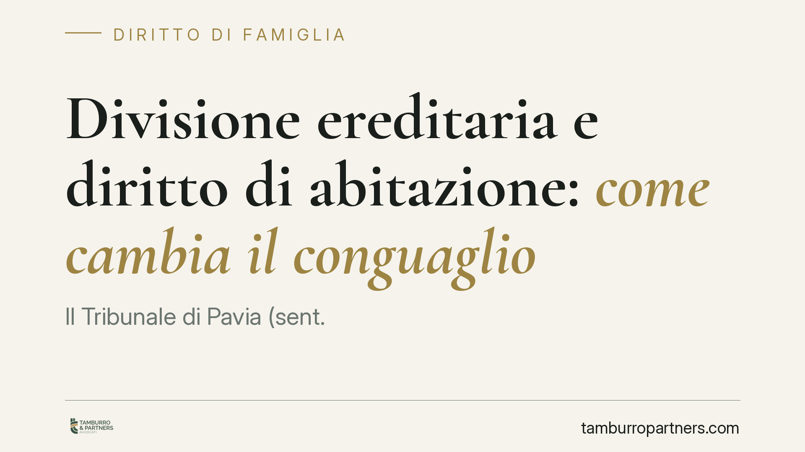

Divisione ereditaria e diritto di abitazione: come cambia il conguaglio
Il Tribunale di Pavia (sent. 770/2026) affronta un nodo ricorrente nelle successioni: come pesa il diritto di abitazione del coniuge superstite quando la casa, indivisibile, viene assegnata a un solo erede. La risposta incide direttamente sul conguaglio in denaro dovuto agli altri coeredi. Un chiarimento con effetti economici concreti per chi eredita un immobile.

Il caso
Un immobile di famiglia, non frazionabile in modo utile, entra nell'asse ereditario. Uno dei coeredi vanta una quota maggiore e chiede l'assegnazione dell'intero bene, con obbligo di versare agli altri il valore delle rispettive quote (il cosiddetto conguaglio). Sul bene, però, grava il diritto di abitazione del coniuge superstite.
La questione economica è semplice da enunciare e delicata da risolvere: quanto vale davvero quella casa, se il coniuge ha diritto di viverci a vita? E, di conseguenza, quanto deve pagare l'erede assegnatario agli altri?
Inquadramento normativo
Il punto di partenza è l'art. 540, comma 2, del Codice civile, che riserva al coniuge superstite il diritto di abitazione sulla casa adibita a residenza familiare e il diritto d'uso dei mobili che la corredano. È un diritto reale di godimento a carattere vitalizio, che si somma alla quota ereditaria e non ne fa parte.
La divisione dell'immobile indivisibile è regolata dagli artt. 718 e 720 c.c.: quando il bene non è comodamente divisibile, va assegnato per intero al coerede con quota maggiore (o su accordo), con conguaglio in denaro a favore degli altri. Il richiamo all'art. 2817 c.c. riguarda l'ipoteca legale a garanzia di quel conguaglio.
Il principio affermato dal Tribunale di Pavia è che il diritto di abitazione ex art. 540 c.c. è un peso che grava stabilmente sull'immobile. Come ogni peso reale, ne comprime il valore di mercato: chi acquista o riceve un bene occupato a vita da un terzo non paga il prezzo del bene libero. Di conseguenza, la base su cui calcolare il conguaglio non è il valore pieno della casa, ma quello decurtato del diritto di abitazione.
Il metodo di stima: OMI e non ISTAT
La sentenza contiene un secondo passaggio tecnico rilevante. Per rivalutare e aggiornare il valore dell'immobile, il consulente tecnico d'ufficio ha utilizzato le quotazioni OMI (l'Osservatorio del Mercato Immobiliare dell'Agenzia delle Entrate) anziché gli indici ISTAT.
La scelta ha una logica: gli indici ISTAT misurano l'inflazione dei prezzi al consumo, cioè il potere d'acquisto della moneta. Le quotazioni OMI, invece, fotografano l'andamento effettivo dei valori immobiliari in una determinata zona. Per stimare quanto vale una casa oggi, il dato di mercato è più aderente alla realtà rispetto a un indice inflattivo generale.
Implicazioni pratiche
Per chi eredita, gli effetti sono tangibili.
L'erede assegnatario del bene beneficia di un conguaglio più basso: se la casa è gravata dal diritto di abitazione del coniuge, ne versa agli altri un importo ridotto rispetto al valore del bene libero.
Gli altri coeredi, per converso, ricevono meno. È il rovescio della stessa medaglia: il peso che grava sull'immobile riduce il valore per tutti, non solo per chi lo riceve.
Il coniuge superstite consolida la propria posizione. Il diritto di abitazione non è un vantaggio simbolico: incide in modo concreto sulla stima e, quindi, sull'assetto economico della divisione.
Infine, la scelta del metodo di stima non è un dettaglio da relegare al consulente. La differenza tra criterio OMI e criterio ISTAT può tradursi in somme significative, tanto più in fasi di mercato immobiliare in crescita o in flessione.
Cosa fare in concreto
- Verificate la sussistenza del diritto di abitazione prima di quantificare qualsiasi conguaglio: accertate che l'immobile fosse la residenza familiare e che il coniuge superstite ne abbia titolo ex art. 540 c.c.
- Contestate o richiedete espressamente il metodo di stima in sede di CTU: chiedete che la valutazione tenga conto del peso reale gravante sul bene e privilegi le quotazioni di mercato quando queste risultino più aderenti.
- Fate valutare la posizione da un tecnico di parte prima di aderire a proposte di divisione: una stima autonoma consente di confrontare i numeri e di argomentare in giudizio.
- Considerate la garanzia sul conguaglio (ipoteca legale ex art. 2817 c.c.) a tutela dei coeredi creditori delle somme.
- Documentate tempestivamente destinazione dell'immobile, arredi e situazione familiare al momento dell'apertura della successione: sono elementi decisivi per la stima.
La pronuncia di Pavia non introduce regole nuove, ma applica con rigore principi consolidati. Il suo valore sta nel ricordare che, nelle divisioni ereditarie, i criteri di stima non sono tecnicismi neutri: orientano il risultato economico finale.
---
*Contributo informativo a cura di Tamburro & Partners - Avv. Giuseppe Tamburro. Non costituisce parere legale.*
Ogni famiglia ha il suo equilibrio.
Separazione, divorzio, affidamento, assegno: se vuoi un confronto riservato su una specifica situazione, scrivi allo studio. Ti rispondiamo entro un giorno lavorativo.